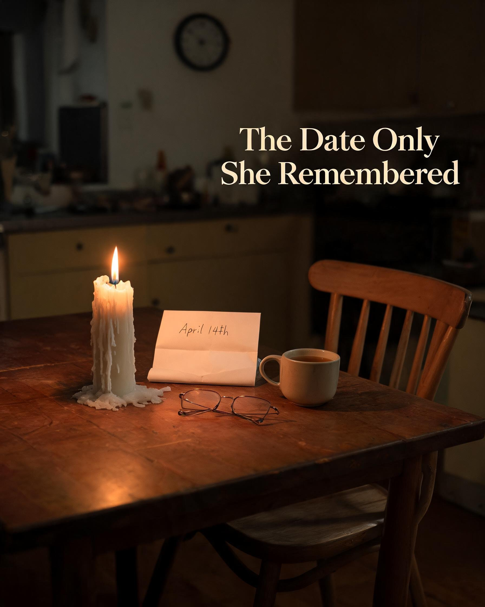

She kept her baby's name in her pocket for six months.
— Emily's story of invisible grief after miscarriage
Everyone kept asking when she'd try again. But they didn't know she was still learning how to breathe after the first loss — still teaching her body how to live inside a grief it never asked for.
And that is where most people's understanding of miscarriage ends. Right there. At the breathing. As if learning to breathe again is the finish line. As if once you're upright, once you're answering texts and showing up to work and ordering coffee without crying — the work is done.
What nobody tells you — what Emily didn't know until she was living it — is that surviving miscarriage and healing from miscarriage are two completely different countries. And for a long time, she was holding a passport to one while being expected to live in the other.
Sunday Morning · Columbus, Ohio The Parking Lot
On Sunday mornings in a small town outside Columbus, people would stop her in the church parking lot with gentle smiles and hopeful questions. They meant well. Most of them did. But every conversation seemed to begin exactly where her healing was supposed to end.
"Have you thought about trying again?"
"God has a plan, honey."
"Maybe next time," one woman said, squeezing her arm before heading inside.
Next time.
As if her heart had already packed away the last time. As if grief came with an expiry date printed somewhere on the packaging that everyone could see except her.
The practiced smile. The hand on the arm. The sentence that feels like an eviction notice from your own grief.
She kept smiling. She kept nodding. She got very good at receiving other people's hope on behalf of a future she wasn't ready to think about yet.
The most harmful thing you can offer a grieving person is a solution. Not because solutions are cruel — but because solutions imply the problem is over. And when it isn't over, a solution feels like an eviction notice.
A Tuesday in February Miller's Diner, Main Street
A few days later, she sat alone in a booth at Miller's Diner on Main Street, watching the coffee grow cold between her hands. Around her, life moved with its ordinary certainty. A waitress laughed near the counter. A young father carried a sleepy toddler toward the door — the child's head heavy on his shoulder, one small hand curled loosely around the collar of his coat. Someone dropped a spoon, and the sound echoed briefly before disappearing.
The world had continued exactly as it always had.
Hers hadn't.
This is what invisible grief feels like. Not dramatic. Not the kind that earns you casseroles and sympathy cards. The kind that sits in a diner booth on a Tuesday morning and orders coffee it doesn't drink, while the world goes on being entirely, almost insultingly, fine.
The Private Calendar The Silent Arithmetic Nobody Sees
People saw Emily — the woman who still showed up, still answered texts, still smiled when required.
What they couldn't see was the silent arithmetic happening beneath every ordinary moment.
Counting weeks.
Remembering dates.
Wondering who she might have been if that phone call had never come.
The private record. She was the only one still keeping count.
This is the thing about miscarriage grief that nobody puts on the informational pamphlets: it doesn't happen in the past tense. It happens in the present continuous. It is not I lost a pregnancy. It is I am still losing, every day, in a hundred small uncelebrated ways.
The women doing these calculations in secret are not broken. They are not stuck. They are doing something quietly profound — they are keeping faith with a life that the rest of the world has already stopped counting.
That is not weakness. That is love with nowhere to go.
And love with nowhere to go is still love.
The Name What She Never Said Out Loud
There is something she had never written down before. Something she had turned over in her mind for months like a stone in a pocket — worn smooth from handling, private from hiding.
She had carried the name for six months. She had never said it out loud. Not once.
Her name.
Clara.
She had chosen it before the phone call came. She had been quietly trying it out in her mind the way you try on a piece of clothing you're not sure you can afford — holding it up, imagining it on, putting it back, picking it up again.
She had never said it to her husband. Not to her mother. Not to the doctor. Because saying it out loud would make her real in a way that felt dangerous. And then the loss came, and she kept not saying it, for different reasons. Because nobody had given her permission. Because no one holds a ceremony for a baby who never arrived, and without a ceremony there is no moment where saying the name is the expected, sanctioned, invited thing to do.
So she kept her in her pocket.
Clara. Four months almost. A future that existed in full detail inside her and nowhere else.
When a woman loses a pregnancy, she does not only lose a future. She loses a specific, particular, irreplaceable person who was already completely real to her — named or unnamed, four weeks or fourteen. The world measures pregnancy loss in weeks. The mother measures it in everything else. In names. In due dates. In the Halloween costume she had already imagined. In the voice she had already begun to hear.
April 14th The Due Date Nobody Marked
She knows the date the way she knows her own birthday — not because she chose to remember it but because some knowledge bypasses decision entirely and installs itself permanently, in the body, in the bone.
She had marked nothing on the calendar. She made no plans. She thought that was the right approach — don't give the day more weight than it needs.
But April 14th came anyway.
She woke early, the way you wake before something significant — the body knowing before the mind catches up. She made coffee. She sat at the kitchen table in the grey early light and thought about Clara for a very long time.
By midday, she had answered eleven messages, attended a work call, eaten lunch standing at the kitchen counter. No one who spoke to her that day knew what day it was.

"The Date Only She Remembered." April 14th. The candle she lit alone.
She lit a candle that evening. Just one. For Clara. For the morning that didn't happen. For the specific shape of a life that existed nowhere in the world except in the place where she was still keeping count.
You do not need a funeral to mourn a person. You do not need an audience for your grief to count. The candle you light alone, in the quiet of an evening no one else knows is significant — that is not a small thing. That is one of the largest, most human things a person can do.
The Morning After What Healing Actually Looked Like
People imagine healing from pregnancy loss as a kind of return. A restoration. You go back to who you were. The wound closes. You try again. That is not what happened.
The first morning she woke up and didn't think about Clara immediately — didn't feel the weight of the loss settle onto her before she was fully conscious — she lay very still in the half-dark and felt something unexpected.
Not relief.
Guilt.
As if forgetting, even briefly, even for the forty-three seconds between sleep and full waking, was a betrayal. As if the proof of her love for Clara was in the constancy of her grief, and the moment the grief softened she had somehow loved her less.
Healing is not betrayal. The morning you wake up and feel okay is not the morning you loved your baby less. It is the morning you loved yourself enough to still be here.
The Letter What She Finally Wrote
In all the months that followed, what she was searching for — underneath the grief, underneath the arithmetic, underneath the name she kept in her pocket — was one specific thing.
Not answers. Not solutions. Not a recommended supplement protocol or a specialist referral or a gentle suggestion about timing.
Someone to say: She was real. Clara was real. What you lost was real. And you are allowed to take as long as you need to understand that.
The pen already in her hand. The blank page. The stone beside her. This is the moment of finally beginning.
Dear Clara,
I don't know what you would have looked like. I imagine something of your father in the set of your jaw, something of me in the eyes — though I know that's just wishful mathematics.
I know the date you would have arrived. I know the season — the way the light would have looked through the hospital window, the quality of the October air, the specific coolness of the morning I had imagined walking you home into.
I know that I would have been the kind of mother who worried too much and loved without reservation and apologised too quickly and would have done anything — anything — to make your world feel safe.
I know that because I know who I am. And you were made of me.
I am not writing to say goodbye. I think I will always be in the middle of that. I am writing to say that you were here. That someone counted you. That there is a woman in a small town outside Columbus, Ohio, who lit a candle on April 14th and said your name out loud for the first time and cried in a way that felt, strangely, like relief.
Your name is Clara.
You were real.
I am still learning how to carry that, and I think I will be for a long time, and I have decided that is okay.
With all of it — the grief and the love and the complicated, ongoing arithmetic of missing you —
Your mother
What This Story Is Really About The Women Still Saying Goodbye
It is not about trying again. It is not about miscarriage statistics or chromosomal abnormalities or what to eat in the first trimester.
It is about the specific, relentless loneliness of being expected to recover on someone else's timeline from a loss that the world didn't fully see.
It is about the women sitting in diners on Tuesday mornings, watching coffee go cold, counting weeks that no one else is counting.
It is about the names kept in pockets. The candles lit in private. The due dates no one marks. The letters never sent until now.
She said the name. She wrote the letter. She is still standing. The world did not end.
They were real. Every one of them. And the women still saying goodbye deserve to take exactly as long as they need.
While Emily's story is her own, pregnancy loss touches people of all genders and backgrounds. Everything below is written for anyone carrying this grief, in whatever form it takes.
What Private Grief After Miscarriage Actually Is
Most people understand grief as something visible — it announces itself at a funeral, in a hospital waiting room, or in the way a person's face looks when their world has broken.
Miscarriage grief is rarely any of those things.
It is the kind of grief that happens in the in-between spaces. In the car on the way to work. In the shower before anyone else wakes up. In the frozen food aisle when you reach for something and suddenly cannot remember why you came to the shop in the first place.
Researchers who study bereavement have a term for this: disenfranchised grief. It means grief that the world around you does not officially recognise or sanction. Grief without a ceremony. Grief without a publicly acknowledged loss. Grief you are expected to carry privately because those around you — through no fault of their own — don't know how heavy it is.
Miscarriage often sits in this category. There was no funeral. There may have been no announcement. The world did not stop. And so the grief happens somewhere private and largely unseen — which is an enormous weight to carry, and which explains why so many people describe feeling more alone in their grief than in any other experience of their lives.
You are not imagining that loneliness. It is real. And it is one of the least discussed aspects of pregnancy loss.
Why Miscarriage Grief Feels Different From Every Other Loss
People sometimes say — usually with the best of intentions — that miscarriage grief should be easier because the pregnancy was early. That you didn't know the baby yet. That there was less to lose.
This is one of the most painful misunderstandings a grieving parent can encounter.
Love can begin much earlier — often the moment a test is positive, sometimes even before that, in the quiet space of hoping. By the time a miscarriage happens, many people have already imagined a whole life. They have thought about names. They have pictured school mornings and family holidays and the specific weight of a small person sleeping on their shoulder. They have already begun to become someone's parent.
The loss of that pregnancy is not only the loss of a baby. It is the loss of a future that was already being constructed, room by room, in the most private part of the self.
This is also why miscarriage grief does not necessarily follow the timeline that other losses follow. It arrives in waves — sometimes months later, sometimes years later — triggered by things that seem entirely unrelated to anyone who hasn't experienced it. This is not a sign that something has gone wrong with the healing. It is a sign that someone real was loved.
How to Survive the Due Date — When the World Has No Idea What Day It Is
The due date is one of the hardest days in the private calendar of miscarriage grief. And it is also one of the most invisible. There is no card for it. No one sends flowers. The day arrives and passes in the ordinary world without a single acknowledgement.
- You are allowed to mark it. A candle. A walk somewhere quiet. A letter you write and keep or burn or tuck inside a book. Time spent deliberately. These are not small things.
- You are allowed to ask for specific support. "Can you call me at 7pm?" or "Can we meet for coffee in the morning?" gives the people who love you something concrete to offer.
- You are allowed to take the day off. Grief needs space, and due dates are one of the days that require more of it than most.
- You do not have to explain it to anyone. The date belongs to you. What you do with it belongs to you.
- And if the day passes more quietly than you expected — that is allowed too. Anniversaries and unexpected triggers are common long after the loss. Neither a wave nor a quiet arrival means you loved more or less.
What Actually Helps — And What Doesn't, No Matter How Well-Meaning
This is the thing that people who have been through pregnancy loss wish they could say clearly, without worrying about being ungrateful or unkind.
What tends to help: Hearing that what happened was real. That the grief is proportionate, not excessive. That there is no deadline. Practical help — meals, errands, logistics like calling work or cancelling appointments. Being asked "How are you doing today?" instead of "Are you okay?" — because today leaves room for the truth. Space to talk about the baby as a person.
What tends not to help — even when offered with love: comparisons to other losses; statistics about how common miscarriage is — while factual, these rarely comfort the immediate experience of loss; advice about trying again unless specifically asked; and silence born from not knowing what to say. Most people carrying this grief are not waiting for the perfect words. They are waiting for something — anything — that acknowledges the loss was real.
What Partners Can Do — When You Don't Know What to Do
Grief after pregnancy loss lands differently on different people in the same relationship. One may need to talk about it constantly. The other may need to go quiet. One may be ready to move forward before the other. Neither is the right way to grieve. They are just different ways of being human under enormous pressure.
Do not assume that silence means she is fine. Check in gently — not with questions that require reassurance, but with presence. I'm thinking about it too. I'm here.
When you want to help but aren't sure how, ask directly: "Would you like me to listen right now, or would it help more if I took care of something practical?" This small question removes a great deal of guesswork from both sides.
Consider creating small shared rituals — a moment of quiet together, a candle lit on the due date, a walk on the anniversary — so that both of you have a way to mark the loss that belongs to both of you. Grief shared, even silently, is lighter than grief carried separately in the same house.
When Private Grief Needs More Than Private Support
Most of what happens after miscarriage — the sleeplessness, the waves of sadness, the intrusive thoughts, the way ordinary triggers arrive without warning — is within the range of normal human grief. It does not mean something has gone wrong. It means something enormous has happened.
But sometimes the grief becomes something heavier than a person can carry alone. If grief after pregnancy loss is significantly disrupting your sleep, your ability to eat, your capacity to work or care for yourself, for a sustained period of weeks — please consider reaching out.
Talking to a professional is not a failure. It is simply another form of practical and emotional care — the same instinct that leads you to see a doctor for a physical injury, applied to an invisible one.
Support Organisations for Pregnancy Loss
- The Miscarriage Association (UK): miscarriageassociation.org.uk
- SHARE Pregnancy & Infant Loss Support (US): nationalshare.org
- Sands (Australia): sands.org.au
- If you are outside these countries, search "pregnancy loss support" alongside your country or city. Many organisations offer text or online chat if speaking on the phone feels like too much right now.
Questions People Ask Most About Grief After Miscarriage
She said the name. She is still standing. You will be too.
If this story moved you — please share it with someone who might need it. Every woman who finds this page deserves to find it sooner.
Read More Articles →